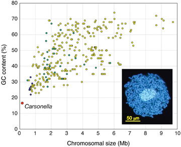

DNA is more or less inert, it acts simply to store information. For that information to be used and useful, it must be transformed first into RNA; this process is known as transcription.
It is called transcription because there is no “change in language”; information is encoded in the same way, through the sequence of bases in both DNA and RNA.
Transcription is mediated by DNA-dependent, RNA polymerase, an enzyme that builds an RNA molecule using a DNA molecule.
The larger the genome, the more information it can, at least in theory, contain.
The organism with the largest known genome is the plant, Paris japonica (Pellicer et al, 2010), with an estimated size of ~150,000 x 106 (millions of) base pairs, which compares to the ~3,200 x 106 base pairs of humans (which encodes approximately 25,000 genes).
Smaller genomes are found in bacteria and archaea, but the smallest genomes occur in obligate parasites and endosymbionts (can you guess why?).
For example, the bacterium Mycoplasma genitalium, the cause of non-gonococcal urethritis, contains ~0.580 x 106 base pairs of DNA, which encodes ~500 distinct genes. It has the smallest genome found for an organism that can be grown independently. Using mutagenesis studies, Lewis et al (2006) found that 382 of its genes are essential, of which ~28% had unknown functions.
The obligate endosymbiont, Carsonella ruddii has 159,662 (~0.16 x 106) base pairs of DNA encoding "182 ORFs (open reading frames = genes), 164 (90%) overlap with at least one of the two adjacent ORFs" (Nakabachi et al, 2006).

Figure:Relationship between genome sizes and GC content of 358 complete genomes from Bacteria and Archaea. In the insert, the tubular structures are Carsonella living inside a cell of a phloem sap-feeding insect Pachypsylla venusta - the host cell's nucleus is the larger blue oval
Locating information within DNA:
The DNA molecules that contain genes can be thousands to millions of base pairs in length. More to the point, a single DNA molecule can contain hundreds to thousands of genes.
To access the information stored in a gene, it is necessary to find the sequence of the gene so that it can be transcribed (copied) into RNA. This sequence has to be recognized and distinguished from all of the other DNA sequences present within the cell.
This is accomplished by using a two-component system. The first part of this system are specific nucleotide sequences within the DNA (very much like the origin of replication sequences we discussed before.)
These sequences provide a molecular address that can be used to identify the specific region of a specific strand of the DNA to be transcribed. The set of sequences involved in identifying the region of a gene to be transcribed is known as the gene's regulatory region.
The regulatory region of a gene can be simple and relatively short or complex and extremely long. In some human genes, the gene's regulatory region is spread over thousands of base-pairs of DNA, located both "up-stream" and "down-stream" of the coding region.
You can carry out a simple mathematical exercise, how long would a nucleotide sequence have to be, to be unique within 3,200,000,000 base pairs?
Regulatory DNA sequences are recognized by proteins that bind to DNA in a sequence specific manner; these proteins are known as transcription factors because they regulate transcription.
Specific regulatory sequences are bound by specific transcription factors, and it is common that multiple transcription factors are used together (combinatorially) to recognize and regulate the expression of specific genes.
A specific transcription factor can act either positively or negatively.
Positively-acting transcription factors, known as activators, stimulate transcription.
Negatively-acting transcription factors, known as repressors, suppress transcription.
Sometimes a transcription factor that acts positively at one DNA regulatory site will act negatively at another, depending upon its interactions with other proteins that bind near by, or that associate with the transcription factor. Transcription factors are "context dependent".
DNA-binding transcription factors recognize specific DNA sequences by interacting with the surfaces of the base pairs visible in the major and minor grooves of the DNA helix.
A single base pair change in a gene's regulatory region can profoundly alter the efficiency or timing of transcription.
The binding of transcription factors recruits or inhibits the recruitment of an enzyme complex, the DNA-dependent, RNA polymerase, to the DNA.
 ]_
]_
This RNA polymerase synthesizes RNAs.
Where RNA polymerase starts transcribing RNA is known as the transcription start site. Where it falls off the DNA, and so stops transcribing RNA, is known as the transcription termination site.
As transcription initiates, the RNA polymerase moves away from the transcription start site.
Once the RNA polymerase complex moves far enough away (clears the start site), there is room for a new polymerase complex to associate with the DNA, through interactions with transcription factors.
The efficiency of RNA polymerase binding and activation determines the rate at which RNA molecules are produced.
RNA polymerase bound to DNA, click the image to learn more about the process of transcription
Questions to answer
Questions to ponder
When the information is to be used to produce a polypeptide, the RNA is known as a messenger RNA or mRNA. The information in the mRNA will then be translated from a nucleotide into a polypeptide sequence. This process involves a large macromolecular complex, the ribosome, and various accessory factors.
The sequence of nucleotides in DNA is related to the final sequence of the polypeptide by the genetic code.
The genetic code is not the information itself, but the algorithm by which nucleotide sequences encode polypeptide sequences. The code consist of codons, which are nucleotides, read three at a time without spaces.
Since there are 4 nucleotides, there are 43 (or 64) possible codons. Since all organisms use the same 20 amino acids, the code is redundant - certain amino acids are encoded for by more than one codon.
There are also three codons, UAA, UAG and UGA that encode “stops” or periods.

Figure: The genetic code algorithm
In addition to the common 20 amino/imino acids, there are times when other amino acids are used, in particular selenocysteine and pyrrolysine.
In the case of selenocysteine, the amino acid is encoded by a stop codon, UGA, that is in a particular context within the RNA [see here for more details - totally optional].

In the case of pyrrolysine, coding also involves a stop codon. In this case, a gene encodes a special tRNA that recognizes the normal stop codon UAG (and is charged with pyrrolysine - see below).
There are a number of hypotheses on the origin of the genetic code, from the frozen accident model, to one in which specific interactions between RNAs and amino acids play an important role.
What these unusual amino acids, and other variations in the genetic code (see here), illustrate is that evolutionary mechanisms can change the genetic code. Since it does not appear to be “predetermined”, the general conservation of the genetic code among organisms is seen as strong evidence that all organisms (even the ones with minor variations in the genetic code) are derived from a single common ancestor.
It appears that the genetic code is a homologous trait between all organisms.
Translation involves a complex cellular organelle, the ribosome, which together with a number of accessory factors, including transfer or tRNAs, reads the code in an mRNA and produces the appropriate polypeptide.

[can’t stop yourself? click here for a more detailed description of translation.]
In general (but not always), the first 5’ AUG in the mRNA, which encodes the amino acid methionine, serves to mark the start of translation.

Ribosomes are composed of roughly equal amounts of ribosomal (rRNAs) and ribosomal polypeptides. An active ribosome is composed of a small and a large ribosomal subunit.
The complete ribosome has a molecular weight of ~3 x 106 daltons. A evolutionarily conserved catalytic rRNA, a ribozyme, lies at the heart of the ribosome - it catalyzes the addition of amino acids to the growing polypeptide chain.
The cytoplasm of cells is packed with ribosomes. In a rapidly growing bacterial cell, approximately 25% of the total cell mass is ribosomes.

Figure: A David S. Goodsell image.
Although structurally similar, there are characteristic differences between the ribosomes of bacteria and eukaryotes.
This is important from a practical perspective. For example, a number of antibiotics selectively inhibit translation by bacterial, but not eukaryotic ribosomes.
Both chloroplasts and mitochondria have ribosomes of the bacterial type.
This is yet another piece of evidence that chloroplasts and mitochondria are descended from bacterial endosymbionts.
The small and large subunits of the ribosome remain separate until they find an mRNA.
Together with accessory factors, they associate with the mRNA and assemble into a functional ribosome, which then translates the mRNA.
When the ribosome reaches the end of the region of the RNA that encodes the polypeptide (defined by a stop codon), it is released, disassembles and is ready to start another cycle.
Key translation accessory factors are the transfer RNAs or tRNA.
These are small, L-shaped RNAs. There are specific tRNAs for each amino acid. For example, a tRNA specific for phenylalanine would be written tRNAPhe.
Enzymes, amino acyl tRNA synthetases, recognize specific tRNAs and catalyze the attachment of the appropriate amino acid to the tRNA’s acceptor stem.

A codon in an mRNA is recognized by the anticodon in the tRNA molecule.
Initiating translation: To make the correct polypeptide, the ribosome must start translating an mRNA at a specific point, the start codon.
In eukaryotes, the initial amino acid of the polypeptide is almost always encoded by the first 5’ AUG in the mRNA, its position determines the “reading frame” of the mRNA (with each subsequent triplet being recognized by the appropriate amino acid charged tRNA. Similarly, the end of the polypeptide is marked by a stop codon(UGA, UAA or UAG).
 A
A
Figure: tRNA associated with the elongation factor TU (EF-TU)
Accessory factors are associated with translation initiation, elongation and termination.
The mRNA moves through the ribosome, bringing one codon after another into place.
Each codon is recognized by an amino acid-charged tRNA.

This is a stochastic process , on average many amino-acid charged tRNAs will collide with the ribosome before the “right” one (determined by the codon-anti-codon interaction), hits and binds productively.
Once in place, the ribosome catalyzes the formation of a peptide bond and the transfer of the growing or nascent polypeptide to the newly arrived amino acid-charged tRNA and the release of the now uncharged tRNA.
Here is a nice translation tutorial
(What is (seriously) unrealistic about this tutorial?)
The process of translation uses energy (in the form of coupled reactions) both to move the mRNA through the ribosome and to form the peptide bonds.
Normally, there are no tRNAs that recognize stop codons, so when the ribosome reaches a stop codon, it stalls as it waits for a charged tRNA which will never arrive.
Instead, a polypeptide known as a release factor, which looks very much like a tRNA, can bind instead. This leads to the release of the polypeptide from the ribosome, and the disassembly of the translation complex.
Questions to answer
Questions to ponder